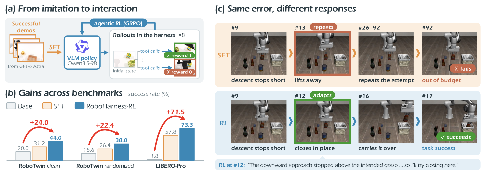
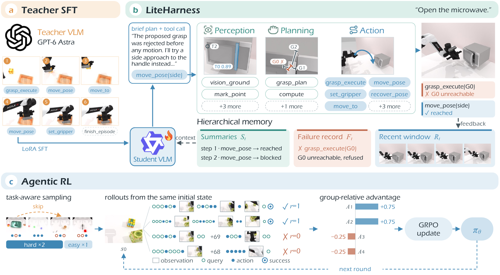

RoboTwin · clean
+12.8 percentage points
Zhejiang University, State Key Lab of CAD & CG
A 9B Qwen3.5 model learns to use tools, respond to feedback, and complete manipulation tasks.

THE METHOD
RoboHarness-RL trains Qwen3.5-9B to issue perception, planning, and control tool calls.

SFT and RL use the same 9B backbone and LiteHarness, evaluated on matched instances.
+12.8 percentage points
+15.5 percentage points
+11.6 percentage points
7.6 percentage points lower
3.4 percentage points lower
8.4 percentage points lower
Selected successful evaluation episodes from the round-25 RL policy. Replays run at 1× simulation time; model inference and query waiting time are omitted. Use the video controls to enable action and feedback captions.
Try another dataset.